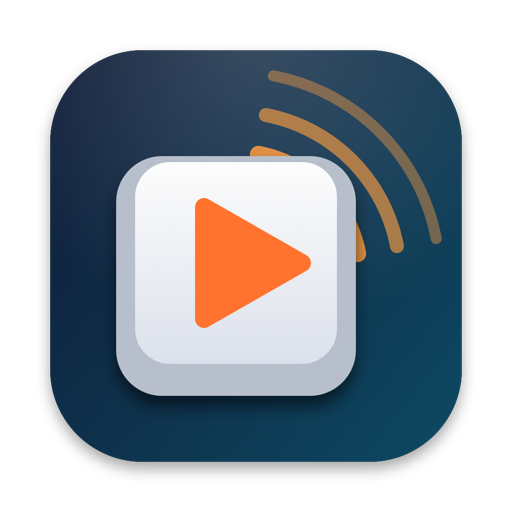
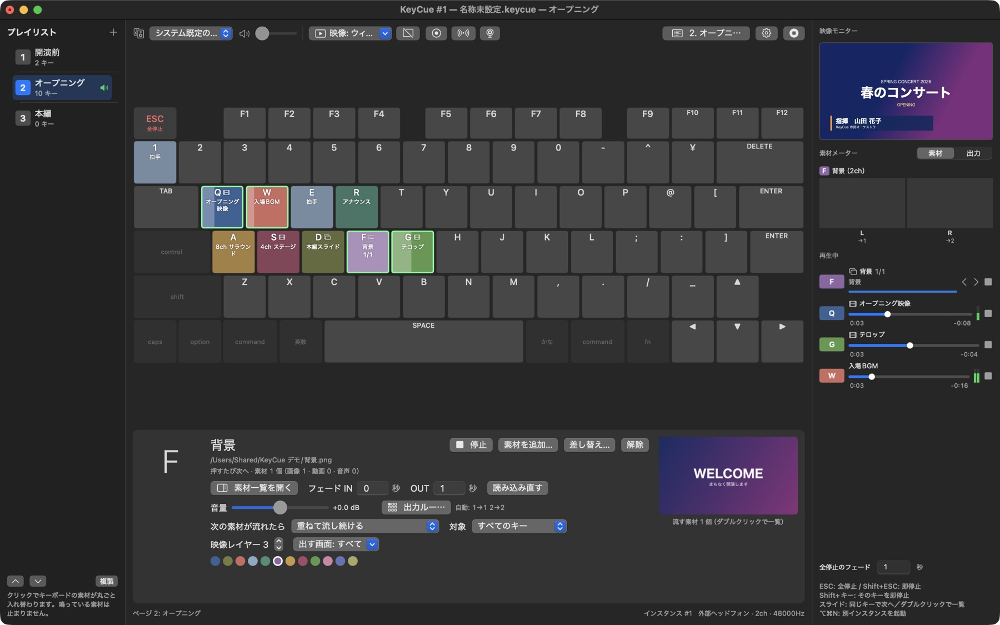
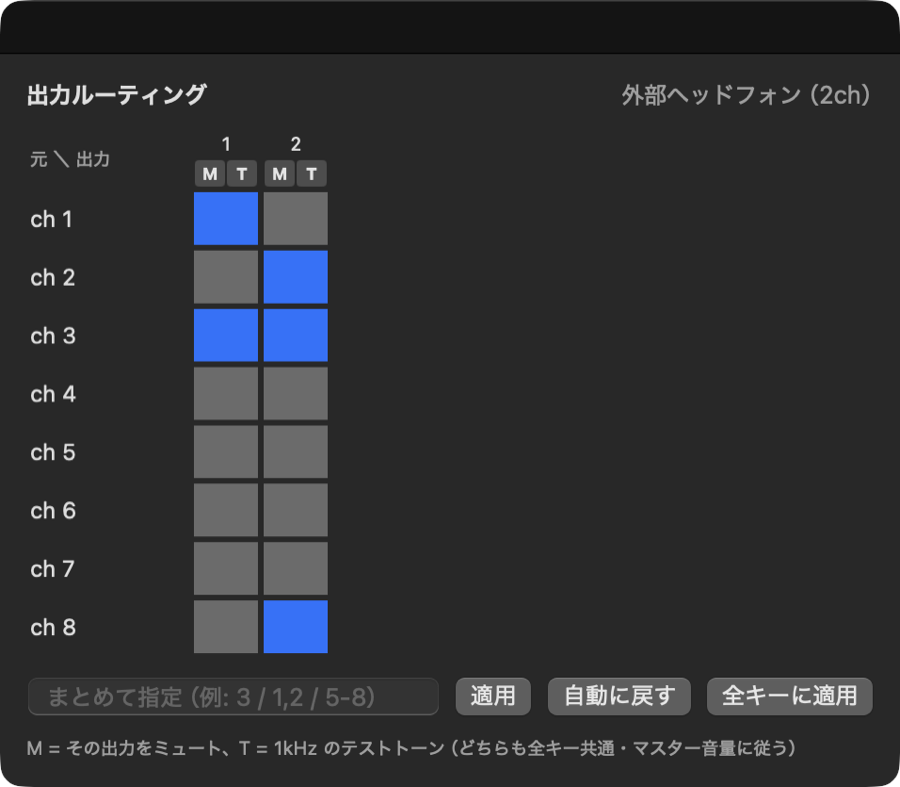
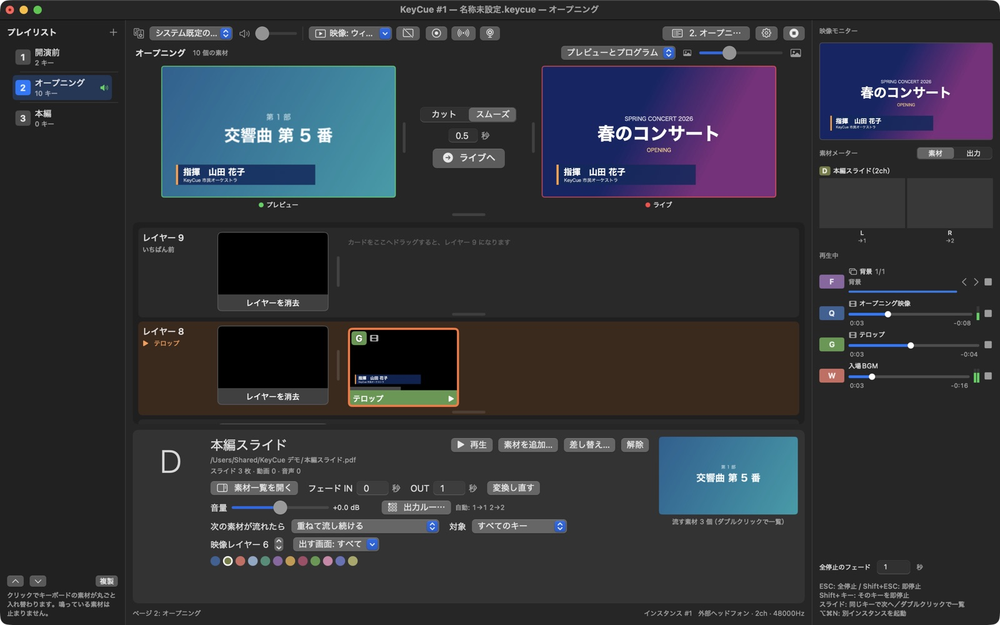
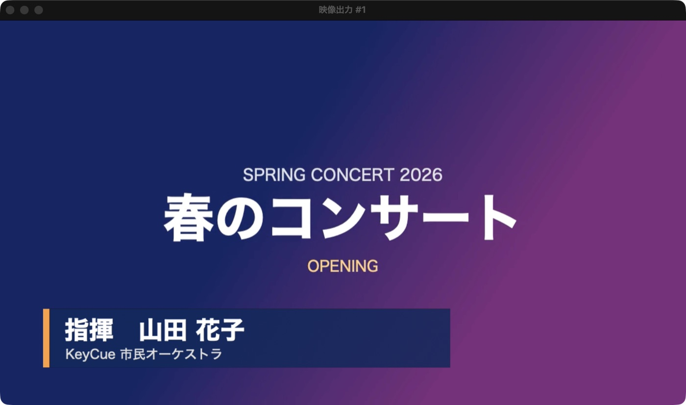
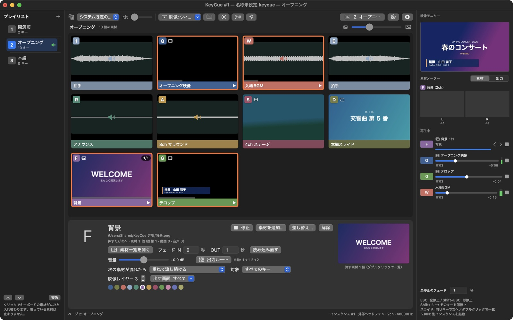
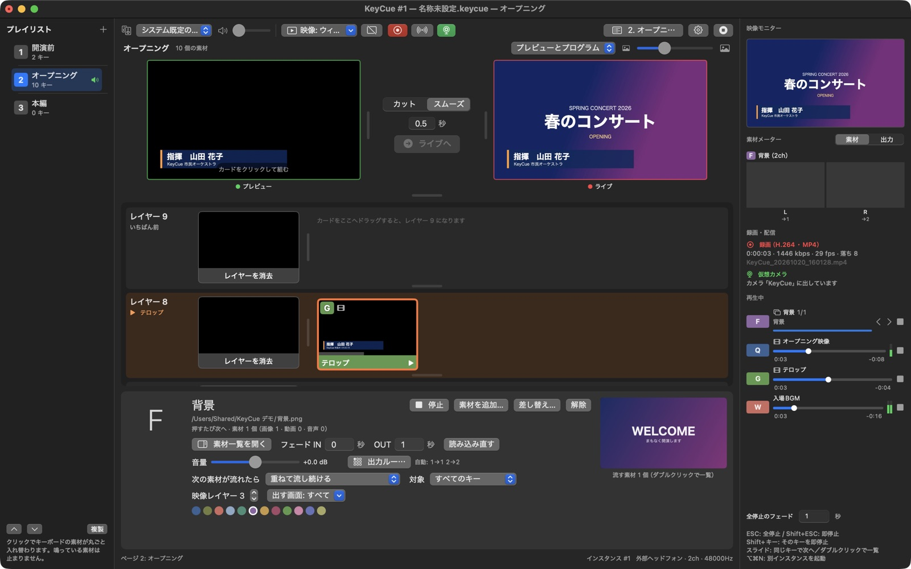
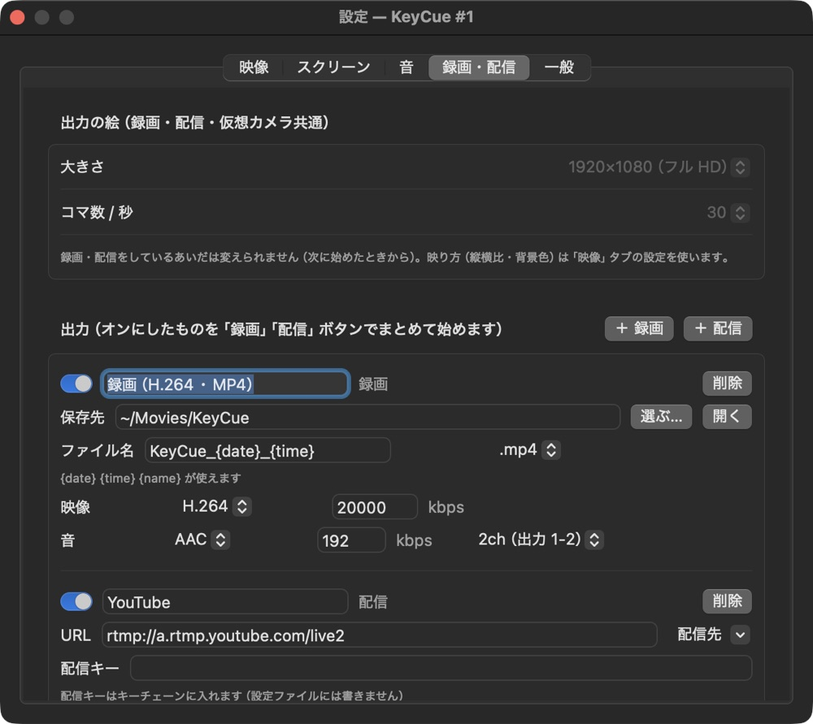

KeyCueキーを押すだけで、音と映像とスライドを。
キーボードの各キーに音声・動画・画像・Keynote / PowerPoint のスライドを割り当てて、本番ではキーを押すだけ。ライブ、イベント、礼拝、舞台のためのキュー再生アプリです（Mac・Windows）。
ダウンロード v{{VERSION}}
押せば鳴る。もう一度押せばフェードして止まる。別のキーは重ねて鳴る。
ファイルをキーにドロップするだけ。音声・動画・画像・pptx / key / pdf に対応。US・JIS 配列を自動で判別します。
素材の ch をインターフェースのどの出力から出すかを表で指定。8ch のファイルも、4 本のモノラルトラックを持つ mov もそのまま。
動画の音も同じルーティングで。pptx は PowerPoint、key は Keynote で画像と動画に展開し、押すたびに次のスライドへ。ディゾルブや黒を経由するフェードなど、切り替え効果も素材ごとに。
ウィンドウと、つないだディスプレイの全画面に同時に。キーごとに出す画面を絞ることもできます。
キーボードの「ページ」を並べて、クリックや ⌘→ で素材を丸ごと入れ替え。鳴っている音は止まりません。
キーを押すたびに次の素材へ。並び替え、素材ごとの音量や自動送りも設定できます。
素材の ch ごとのレベル、出力 8ch のメーター、テストトーン。再生中の素材はシークバーで位置を変えられます。
次の素材が流れたら重ねる／フェードして止める／すぐ止める。グループ分けや映像の重なり順も。
Web カメラ、HDMI などのキャプチャ機器、マイクやオーディオインターフェースの入力も、キーひとつで出し入れ。
キーボードの図のほかに、素材をサムネイルで並べるグリッド表示と、映像の重なり順ごとに段に並べるレイヤー表示も。レイヤー表示ではプレビューで組んでから「ライブへ」で切り替えられます。
出している絵と音を、いくつでも同時に録画（H.264・HEVC・ProRes）・配信（YouTube・Twitch などの RTMP / RTMPS）。
出している絵を、Zoom・Teams・OBS などでカメラ「KeyCue」として使えます。
ProPresenter のようなルーティング表で、素材のチャンネルと出力をつなぎます。

本番の操作は、キーかクリックだけ。表示は「キーボード」「グリッド」「レイヤー」から選べます（設定 › 一般）。

Wirecast のように、映像を 9 段のレイヤーに重ねて出します。カードのクリックでプレビューに組み、「ライブへ」でカットかスムーズに切り替え。

ウィンドウと、つないだディスプレイの全画面に同時に出せます。レイヤーの順に重ねるので、テロップは動画の上に。

ProPresenter のように、素材をサムネイルで並べて、クリックで出します。音声は波形、スライドは 1 枚目の絵、流れているものはオレンジの枠で分かります。

出している絵と音（ライブ）を、そのまま録画・配信。仮想カメラ「KeyCue」として、Zoom・Teams・OBS などのカメラにもなります。

出力の大きさ（HD〜4K）とコマ数、録画の保存先・ファイル名・形式、配信先を設定 › 録画・配信 で。オンにしたものを「録画」「配信」ボタンでまとめて始めます。
3 ステップで本番の準備ができます。
| ESC | すべてフェードして停止（Shift+ESC で即停止） |
| Shift+キー | そのキーを即停止 |
| ⌘→ / ⌘← | プレイリストの次・前のページ |
| キーをダブルクリック | スライドや複数素材の一覧を開く |
KeyCue {{VERSION}}（{{DATE}}）— Mac 版と Windows 版は同じ機能で、キーマップ（.keycue）もそのまま開けます
%LOCALAPPDATA%\KeyCue\error.log を添えてお知らせください。%LOCALAPPDATA%\Programs\KeyCue に入り、スタートメニューとデスクトップに KeyCue ができます）。削除は「設定 › アプリ」から。